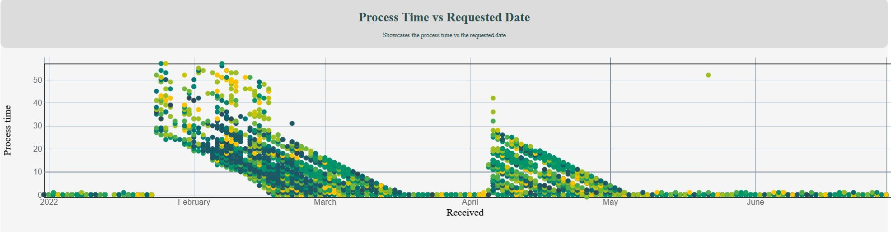

The complete dataset for Cincinnati 311 (non-emergency) service requests can be found here This visualization only uses data from the first 6 months in 2022 due to the size of the data set.
The main view displays a map showing the locations of 311 calls, a bar chart showing the number of 311 calls made each day of the week, a bar chart showing the number of 311 calls with different service codes, a bar chart showing the number of 311 calls by ZIP code, a line chart showing the timeline of when 311 calls were placed throughout 2022, and a scatterplot showing the amount of time between when the request is received and when it is updated.
This visualization is interactive because users can hover over different bars in the bar charts and points on the map, line chart, and scatterplot to learn more information. They can click on a bar to filter the data, and the charts will update to represent only the selected data. They can also activate different views of the map and scatterplot by clicking the buttons directly under the map.
The first row of buttons allows the user to toggle between different map backgrounds, which are satellite, topography, and street views. The second row of buttons allows the user to color the data points on the map and scatterplot by different attributes, such as call type, process time, call date, and public agency. The points on the map and scatterplot are colored by call type by default, and there are color legends underneath the map and the scatterplot that show the different colors and change if the user chooses to color by another attribute.
For all data points, due to the large amount of different data, we used color scales. Because of this, we did not group the data, but did include a legend explaining color meanings.
Our site allows users to learn more about 311, non-emergency calls placed in Cincinnati. This includes information about the calls themselves but also how the calls are handled. One interesting finding is about when calls are placed. These are non-emergency calls, but the call center is presumably always open, so it is interesting to see the sharp contrast between the number of calls placed during the week vs the weekend. This shows that people are hesitant to call about non-emergencies when it is not during the typical work week. We expect there would be a similar spike between 9am-5pm if we had a visualization for the time calls were placed.
Another thing we found is that there are a couple spots, in late January and early April, where process time spikes dramatically for a large number of the calls. This would indicate that the center handling the requests is understaffed or experiencing some other difficulty during this time and could be used to help make better schedules in the future so that requests don't have to wait 20+ days to be completed.

The libraries used in our code are D3, Leaflet and D3 Color-Legend, all linked above. We structured our code so that styling was mostly done in CSS and D3 with some small changes in index. For the Javascript code, most of our visualization specific code was done in classes, such as scatterplot.js, while site wide coding was done in main.js, such as filtering and cleaning of data. Our code can be accessed by clicking on the link above. It can be run by downloading and running a live server on your machine or by running it through github on the site linked above.
If the demo video does not load, please try running on firefox as that's what I've used to test this webpage.